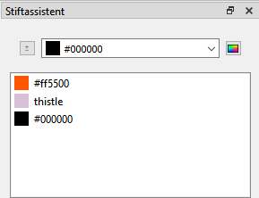

Stiftassistent-Andockwidget
Mit dem Andockwidget „Stiftassistent“ können Sie eine Palette Ihrer Lieblingsfarben für die Zeichenwerkzeuge erstellen.

Die Farbe eines Stiftassistenten verwenden
- Vergewissern Sie sich, dass die Farbe in der Favoritenliste aufgeführt ist, und doppelklicken Sie dann auf die Farbe, um sie zu aktivieren.
Alles, was Sie nun zeichnen, bekommt die ausgewählte Farbe.
Eine Farbe in die Favoritenliste des Stiftassistenten aufnehmen
- Klicken Sie in der Dropdown-Liste auf eine Farbe oder klicken Sie auf die Schaltfläche für benutzerdefinierte Farben (
 ).
). - Klicken Sie auf die Schaltfläche Zu Favoriten hinzufügen ().
Die Farbe erscheint nun in der Favoritenliste des Stiftassistenten.
Eine benutzerdefinierte Farbe erstellen
- Klicken Sie auf benutzerdefinierte Farbe ().
- Zur Erstellung der benutzerdefinierten Farbe geben Sie entweder die Werte für Ton/Sättigung/Wert oder Rot/Grün/Blau an, oder Sie geben den HTML-Farbcode an, oder Sie ziehen das Fadenkreuz über die Farbpalette und stellen außerdem die Hell/Dunkel-Skala ein.
- Klicken Sie auf OK, wenn Sie nur eine benutzerdefinierte Farbe erstellen möchten, oder auf Zu benutzerdefinierten Farben hinzufügen, wenn Sie mehrere benutzerdefinierte Farben hintereinander erstellen möchten.
- Klicken Sie auf OK.
Die neue benutzerdefinierte Farbe, die Sie erstellt haben, erscheint nun in der Dropdown-Liste des Stiftassistenten.
Eine Farbe aus der Favoritenliste entfernen
- Klicken Sie mit der rechten Maustaste auf die Farbe, die entfernt werden soll, und dann auf Entfernen.
Farben in der Favoritenliste neu anordnen
- Sie können die Farben in der Liste durch Ziehen und Ablegen neu anordnen.